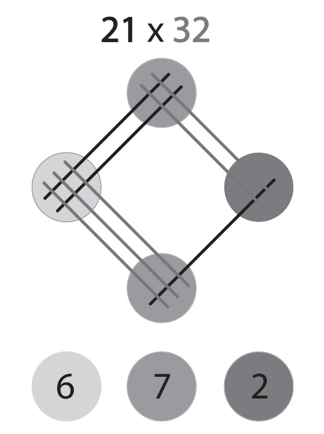
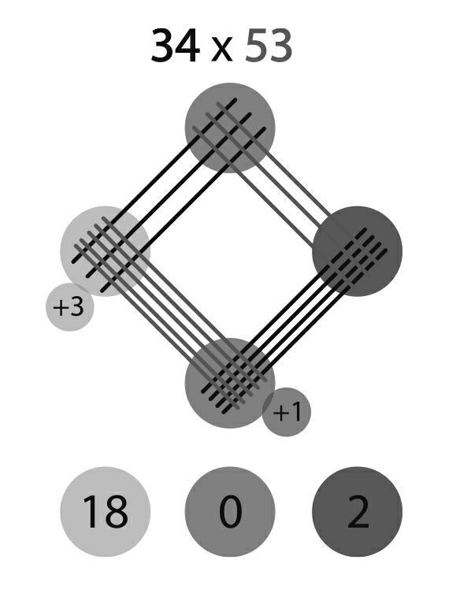

话不多说，接下来我就要向你们展示一个不同寻常的绝妙方法，用这种方法可以速算两位数之间的乘法。这个运算可以只凭视觉完成，因此大家必看不可。
这个方法来自古代中国，像古代中国的造纸术、印刷术、指南针一样，在欧洲人之前就早早发明出来了。
我们从21×32开始。
将两数个位和十位的数字用相应数量的斜线表示（那个时候中国已经有筷子了）。
下图中不同的灰度等级表示了运算过程以及答案。

人们只需要数每个颜色内线与线有多少个交叉点，然后合并相同颜色的交叉点，最后按照从浅至深的顺序写下来，计算就完成了！比“5秒速食食品”还快！
但是当交叉点的数量是两位数的时候要怎么办呢？
那就需要从右至左，向前进一位了。
我们以34×53为例。
下面这张图片能够清楚地反映运算过程。

因此，34×53=1802。
现在亲自动手来试试吧！
以下是一些练习题：
13×14=
53×32=
44×26=